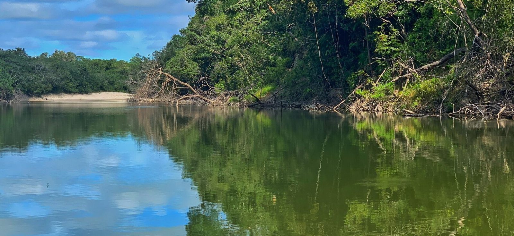
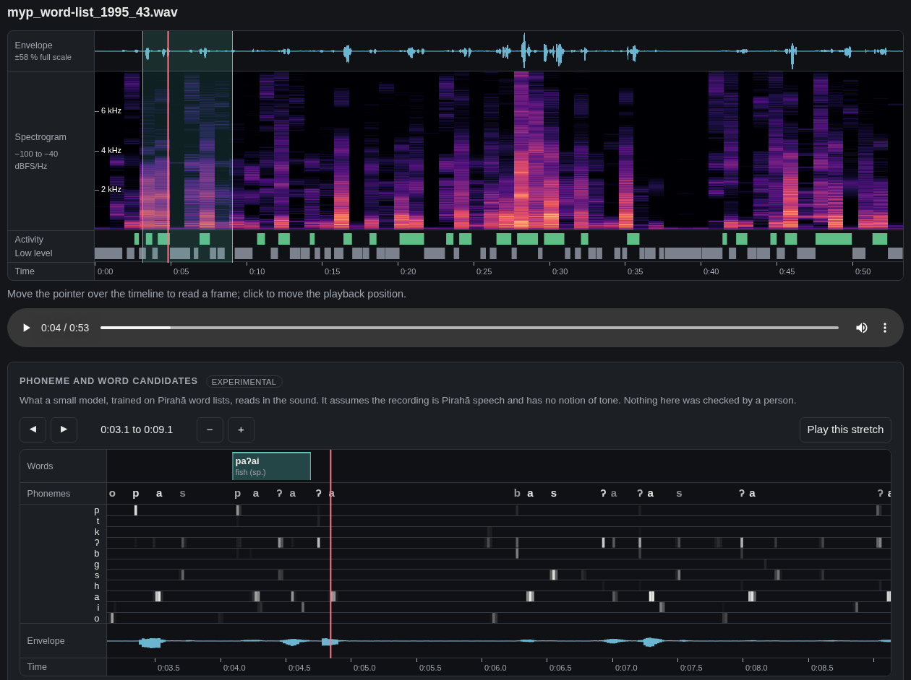

Tools for listening closely to Pirahã recordings
A recording inspector that runs in your browser, and a first, experimental phoneme model built from public archives.
The Maici river, along which the Pirahã live. Photograph: Mariana PA Vasconcelos, CC BY-SA 4.0.
Pirahã is spoken by a few hundred people along the Maici river in the Brazilian state of Amazonas. It has one of the smallest sound inventories described for any language, and decades of field recordings of it exist, most of them without a transcription aligned to the sound.
This project builds small, open tools that help a person work through such recordings: see where there is speech, hear a precise stretch again, and get a first machine reading to correct. The tools are made by a software engineer, not a linguist. They propose candidates; they do not transcribe, and nothing they show has been checked by a speaker of the language.
What is here
Recording inspector
Choose a 16-bit WAV file: levels, an overview spectrogram, activity spans, playback by click. The file stays on your computer; the page is not allowed any network connection.
Phoneme candidates
For Pirahã recordings, a small model scores the 11 phonemes of the archive's transcriptions every 20 ms and shows what it reads, in a view you can zoom and play.
Word candidates
Stretches that resemble an entry of the UCLA word lists, with the list's gloss. Click one to hear it. Most are wrong today; they are a place to start listening.

What it is built from
Only public material: the Pirahã recordings and word lists of the UCLA Phonetics Lab Archive (CC BY-NC 2.0) for training, and one recorded story of the MIT Pirahã corpus (CC BY-SA 4.0) for a test the training never saw. No recording is hosted on this site.
How far it can be trusted
Not far yet. On speakers the model never heard, about four phonemes in ten differ from the automatically made reference, and fewer than half of the word candidates fall on the right word. The news page gives the figures and how they were measured.
The recordings are of Pirahã speakers, made by fieldworkers and published by the archive. If you belong to the community, or work with it, and see something here that should be changed or removed, please say so.